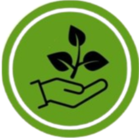

Quem nós somos:
O projeto IFCE EcoTech, deu ínicio após um trabalho de uma disciplina do ensino técnico do campus Maracanaú.
Objetivos:
A ideia central do EcoTech, tem dois propósitos, buscar a consiência ambiental por parte dos docentes e discentes dos campis e também vissando algo lúdico.
Nossa logo:
Funcionamento do app:
O Aplicativo é super acessível, com linguagem fácil de ser compreendia, paleta de cores que atraiem os usuários sem causar desconforto visual.
O login é feito pela matrícula, pois o app é institucional.
O cadastro é necessário alguns dados: Nome completo, campus, email(institucional) e senha.
Menu principal:
No menu principal do app, é onde se encontra as principais funções. Que são:
Locais: Você seleciona alguma das opções disponíveis para o descarte do lixo e confirma, Gerando um código de 4 dígitos.
Descarte: Após confirmar o descarte você insire o código para que seja liberado para colocar a imagem e confirma o descarte.
Ranking: É onde tem os rankings dos lixos disponíveis por meio da contabilidade dos pontos gerados pelos descartes.
Moeda:

EcoPoin's
Protótipo:
No link abaixo você consegue ver o protótipo em alto nível feito pelo Figma.
Link:Protipação